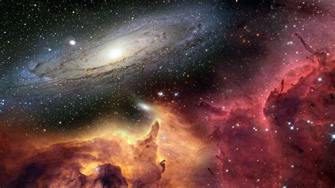
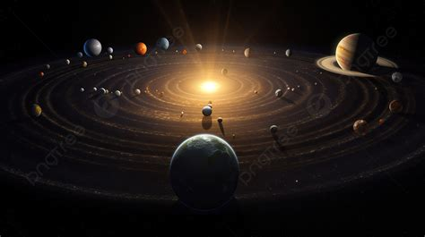
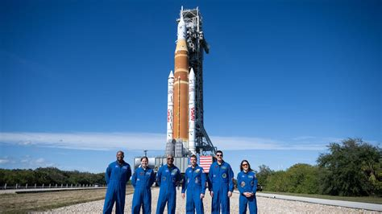
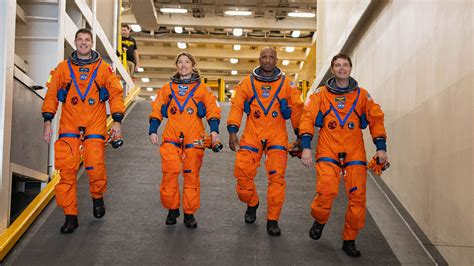

Outer space is the seemingly infinite expanse that lies beyond Earth's atmosphere. It is not a completely empty vacuum: although the density of matter is extremely low, the cosmos is filled with gas, dust, radiation, and billions of celestial bodies.
The boundary between Earth and outer space is not marked by a solid wall, but rather by the gradual thinning of the atmosphere. The internationally accepted boundary is the Kármán line, which lies at an altitude of 100 kilometers above sea level. Above this altitude, aerodynamic lift is no longer sufficient for flight, requiring craft to reach orbital speed to stay in orbit.

The system orbiting our central star, the Sun, is also home to Earth. At the core of the Solar System is a yellow dwarf star, which accounts for more than 99.8% of the system's total mass. The inner terrestrial planets—Mercury, Venus, Earth, and Mars—possess solid surfaces and higher densities, while the outer gas and ice giants—Jupiter, Saturn, Uranus, and Neptune—feature massive atmospheres and complex ring systems. Additionally, the asteroid belt between Mars and Jupiter and the distant Kuiper Belt harbor countless icy and metallic celestial bodies.
The Solar System is just a tiny speck in the Milky Way, a spiral galaxy estimated to contain 100 to 400 billion stars. In the observable universe, there are hundreds of billions of galaxies. According to scientific consensus, outer space originated approximately 13.8 billion years ago from an extremely dense and hot state known as the Big Bang. The universe is not static; galaxies are constantly moving away from each other, and driven by dark energy, the rate of expansion is accelerating.

Humanity’s journey into the cosmos truly began in 1961 when Soviet cosmonaut Yuri Gagarin became the first human to orbit Earth, followed shortly by Valentina Tereshkova as the first woman in space. Just eight years later, NASA's Apollo 11 mission achieved the unthinkable when Neil Armstrong and Buzz Aldrin stepped onto the lunar surface, marking humanity's first footsteps on another celestial body. Since then, over 600 individuals from dozens of nations have ventured beyond Earth, maintaining a continuous human presence in orbit aboard outposts like Mir and the International Space Station for more than two decades. Today, human spaceflight is expanding into a new era with private citizens entering orbit, while space agencies prepare to send a diverse team of astronauts back to the Moon under the Artemis program to establish a permanent presence and lay the groundwork for the first crewed expedition to Mars.
